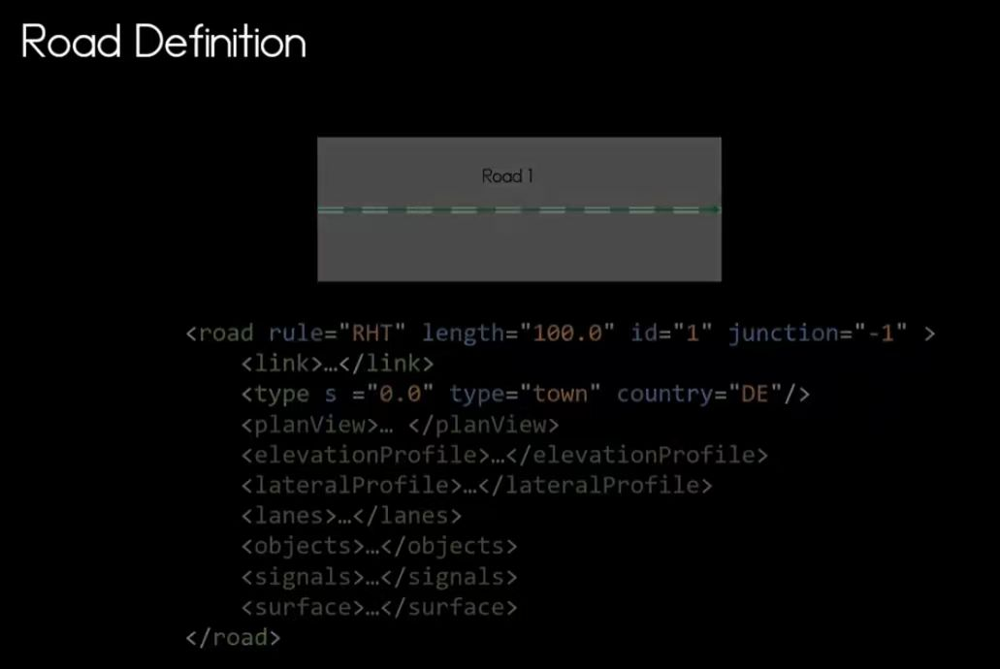

1. 基本概念与 XML 整体结构
基本概念：OpenDRIVE 是一个基于 XML 的道路网络描述标准，核心在于通过参数化参考线定义道路。

XML 标签含义详解：包含 header, road, junction, controller 等核心标签。
基本概念：OpenDRIVE 是一个基于 XML 的道路网络描述标准，核心在于通过参数化参考线定义道路。
XML 标签含义详解：包含 header, road, junction, controller 等核心标签。

OpenDRIVE 定义了多种几何基元，不仅决定物理轨迹，还决定了车辆转向控制的动力学逻辑 (Δα/Δt):


前一个基元的结束状态必须与后一个基元的起始状态完全一致 (C1 连续性)。

s/t 坐标系是 OpenDRIVE 的核心坐标系统，简化了车道属性定义。
Road Definition 是 OpenDRIVE 描述道路逻辑属性的基础单位。

通过 <road> 标签定义道路规则（如 rule="RHT" 右侧通行）、长度、ID 及所属路口。其内部挂载了完整的道路描述组件：